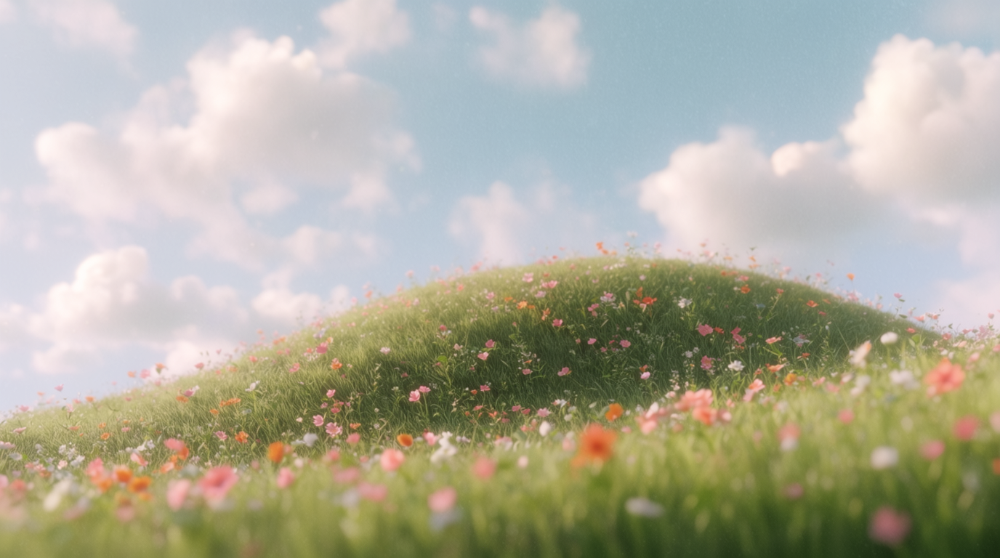

There's a little house out there. Wipe the glass to find it.
Breathe
At Seven, we transform ideas into engaging stories through animation. Our skilled team excels in creative storytelling, blending stunning visuals and unique characters to bring projects to life, whether short films or series.
View projects